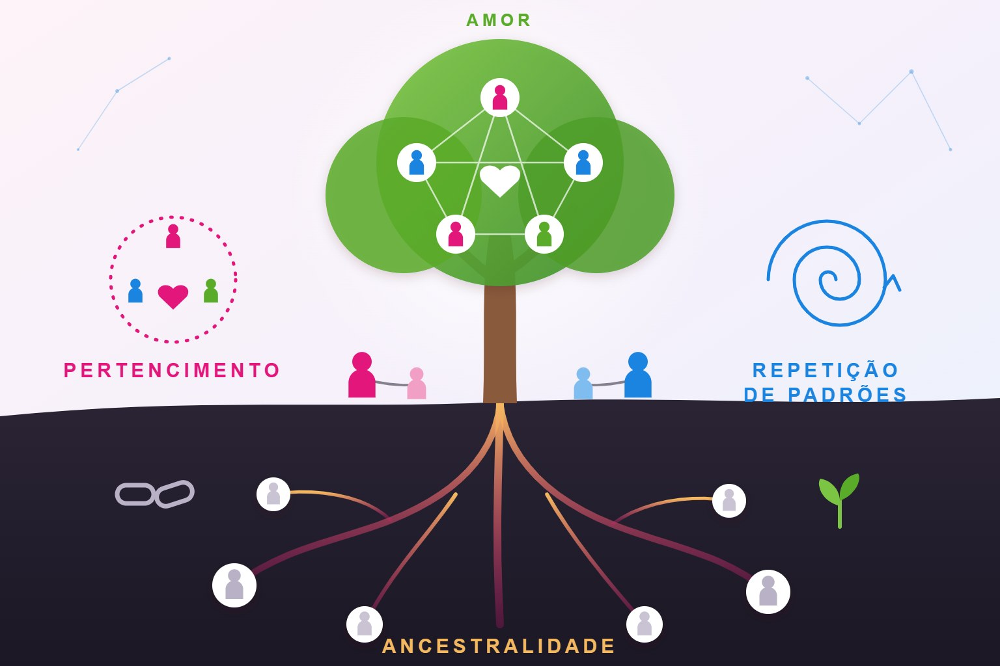

Autoconhecimento
Perdão: por que perdoar faz bem e como começar
Por Equipe Instituto AMA · Publicado em
Uma palavra dura de alguém da família. Uma traição de um amigo. Uma injustiça no trabalho que ninguém reparou. Todo mundo já foi magoado, e todo mundo já carregou por meses, às vezes por anos, a lembrança de uma ofensa que não passa.
Perdoar é um dos gestos mais pedidos por todas as religiões e um dos mais difíceis de praticar. Nesta matéria você vai entender o que é perdoar e o que não é, por que guardar mágoa faz mal, o que a psicologia sugere para começar e como as tradições espirituais falam do perdão.
O que é perdoar?
Perdoar é uma decisão de deixar ir o ressentimento, a raiva e o desejo de vingança contra quem nos feriu. É uma mudança que acontece dentro de quem perdoa: a ofensa continua tendo existido, mas deixa de comandar os nossos pensamentos e sentimentos.
O perdão costuma ser um processo, não um momento. Pode ser preciso perdoar de novo cada vez que a lembrança volta, e tudo bem. Cada vez costuma pesar um pouco menos.
O que perdoar não é
Muita gente resiste ao perdão por achar que ele exige coisas que, na verdade, não exige. Perdoar não é:
- Esquecer: a memória continua. O que muda é a dor que ela carrega.
- Concordar ou dizer que estava tudo bem: o erro continua sendo erro. Perdoar não apaga a responsabilidade de quem errou.
- Voltar a conviver: é possível perdoar e manter distância. Reconciliação depende das duas partes; o perdão depende só de você.
- Abrir mão dos seus direitos: perdoar não impede de buscar a Justiça, pedir uma reparação ou registrar uma denúncia.
- Fingir que não doeu: reconhecer a dor é o primeiro passo para conseguir soltá-la.
Perdoar não é permanecer em risco
Em situações de violência física, psicológica, sexual ou financeira, a prioridade é a sua segurança. Perdoar, nesses casos, nunca significa continuar perto de quem agride nem desistir de se proteger. Mulheres em situação de violência podem ligar para o Ligue 180, a Central de Atendimento à Mulher: a ligação é gratuita, sigilosa e funciona 24 horas. Em emergência, ligue 190.
Por que guardar mágoa faz mal
Quando ficamos remoendo uma ofensa, revivemos a mesma raiva muitas vezes, como se o fato acontecesse de novo. A Clínica Mayo, dos Estados Unidos, lembra que o perdão está associado a relacionamentos mais saudáveis, mais bem-estar emocional, menos ansiedade, estresse e hostilidade e menos sintomas de depressão.
Guardar mágoa também dá a quem nos feriu um poder permanente sobre o nosso humor. Perdoar é tomar esse poder de volta. Se você quer entender o que leva alguém a ferir e diminuir o outro, leia Por que alguém humilha?
O que a psicologia sugere: o modelo REACH
O psicólogo norte-americano Everett Worthington, que pesquisa o perdão há décadas, criou um caminho em cinco passos chamado REACH, as iniciais em inglês de cada etapa:
- Relembrar a ofensa (Recall): reconheça o que aconteceu e o quanto doeu, de forma objetiva, sem alimentar fantasias de vingança.
- Ter empatia (Empathize): tente imaginar o que se passava com a outra pessoa. Entender não é justificar; é enxergar alguém também limitado e ferido.
- Oferecer o perdão como presente (Altruistic gift): lembre-se de quando você mesmo precisou ser perdoado e ofereça o perdão de forma gratuita.
- Assumir o compromisso (Commit): registre a decisão, por exemplo escrevendo num papel: "Hoje eu perdoei fulano por…".
- Manter o perdão (Hold): quando a mágoa voltar, e ela volta, releia o que escreveu e lembre que já tomou essa decisão.
Passos práticos para começar
- Dê nome ao que sente: raiva, tristeza, vergonha. Escrever ajuda a organizar.
- Converse com alguém de confiança: um amigo, um líder religioso ou um psicólogo.
- Comece pelas mágoas menores: o perdão também se treina.
- Ore ou medite pela pessoa: mesmo sem vontade, desejar o bem a ela costuma amolecer o coração com o tempo.
- Olhe para a sua própria sombra: às vezes o que mais nos fere no outro toca algo nosso. O método 3-2-1 da sombra ajuda nessa reflexão.
- Pratique a gratidão: lembrar o que há de bom na vida diminui o espaço da mágoa. Veja Gratidão: o que é e como praticar.
Perdoar a si mesmo
Muitas vezes a mágoa mais difícil é a que sentimos de nós mesmos. Perdoar a si mesmo não é se dar razão: é reconhecer o erro, pedir desculpas a quem foi atingido, reparar o que for possível e decidir agir diferente. A culpa que ensina é útil; a culpa que só pune não ajuda ninguém. Se você guarda um segredo que pesa, a matéria Mentira ou segredo? pode ajudar a pensar no que fazer.
O fraco jamais perdoa: o perdão é uma característica dos fortes.
O perdão nas religiões
O perdão está no centro de praticamente todas as tradições espirituais.
- No Pai Nosso, a oração ensinada por Jesus, pedimos a Deus: "perdoai as nossas ofensas, assim como nós perdoamos a quem nos tem ofendido". O perdão que pedimos fica ligado ao perdão que oferecemos.
- No Evangelho de Mateus (18,21-22), Pedro pergunta se deve perdoar até sete vezes, e Jesus responde: não até sete, mas até setenta vezes sete. Ou seja, sempre.
- Na Doutrina Espírita, o capítulo X de O Evangelho Segundo o Espiritismo, "Bem-aventurados os que são misericordiosos", ensina a perdoar para que Deus nos perdoe e a buscar a reconciliação com os adversários. Para o Espiritismo, o perdão liberta quem perdoa e evita que a mágoa se prolongue por esta e por outras existências.
- No judaísmo, antes do Yom Kipur, o Dia do Perdão, é costume procurar as pessoas que ofendemos e pedir desculpas a elas.
- No islamismo, um dos nomes de Deus é "O Perdoador", e perdoar o próximo é visto como caminho para receber o perdão divino.
Cada tradição tem a sua linguagem, mas a mensagem se repete: o amor e a misericórdia aproximam as pessoas de Deus. Leia também Todas as religiões levam ao bem.
Perguntas frequentes
Perdoar é o mesmo que esquecer?
Não. Perdoar é deixar de alimentar o ressentimento e o desejo de vingança. A lembrança continua, mas perde a força de ferir. Também não é preciso concordar com o que aconteceu nem voltar a conviver com a pessoa.
Sou obrigado a voltar a conviver com quem me magoou?
Não. Perdão e reconciliação são coisas diferentes. Você pode perdoar e manter distância, principalmente se a convivência traz sofrimento ou risco. Em casos de violência, a segurança vem primeiro.
Como começar a perdoar alguém?
Um caminho conhecido é o modelo REACH, do psicólogo Everett Worthington: relembrar a ofensa sem desejo de vingança, tentar ter empatia, oferecer o perdão como presente, registrar a decisão por escrito e reler esse registro quando a mágoa voltar.
Como perdoar a mim mesmo?
Reconheça o erro, peça desculpas a quem foi atingido, repare o que for possível e decida agir diferente. Culpa que ensina ajuda a mudar; culpa que só pune paralisa. Se o peso for grande, procure apoio psicológico.
O que a Bíblia diz sobre perdoar setenta vezes sete?
Em Mateus 18,21-22, Pedro pergunta a Jesus se deve perdoar o irmão até sete vezes, e Jesus responde que deve perdoar até setenta vezes sete. A expressão quer dizer perdoar sempre, sem contar.
Fontes e leitura recomendada
- Forgiveness: Letting go of grudges and bitterness – Mayo Clinic
- REACH Forgiveness Model, de Everett Worthington – Regent University
- O Evangelho Segundo o Espiritismo, cap. X – Bem-aventurados os que são misericordiosos – Kardecpédia
- Bíblia, Mateus 18 – Bíblia Online
- Ligue 180 – Central de Atendimento à Mulher – Ministério das Mulheres
Leia também
O que é pior: a mentira ou o segredo?
A diferença entre mentir e guardar um segredo, por que fazemos isso e como lidar com a verdade.
Ler matériaO que é a “sombra” na psicologia e o método 3-2-1
Uma prática simples para reconhecer, compreender e integrar partes de si que costumam ficar ocultas.
Ler matéria
O que é Constelação Familiar?
Uma abordagem terapêutica que olha para as dinâmicas inconscientes do sistema familiar.
Ler matériaGostou desta matéria? Veja outras no blog, conheça nossas referências ou fale com a gente.